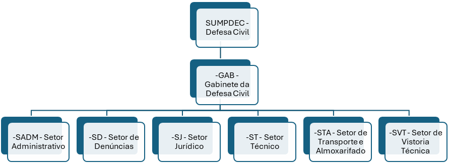

Sobre a SUMPDEC
A Superintendência Municipal de Proteção e Defesa Civil é um órgão vinculado à Secretaria Municipal de Infraestrutura, Transportes e Serviços Públicos, que tem o objetivo de reduzir desastres através de ações preventivas, de preparação para emergências, de resposta aos desastres e de reconstrução.
Ela trabalha a fim de reduzir perdas materiais e humanas, de forma multissetorial e nos três níveis de governo (federal, estadual e municipal) por meio da participação comunitária. Além de fiscalizar bares e similares, postos de combustíveis, postos de distribuição e venda de GLP (gás de cozinha), e casas de shows, a Defesa Civil notifica e fiscaliza as áreas de risco e as áreas ribeirinhas onde ocorrem alagamentos devido ao período de inverno.
Contato e Atendimento
- WhatsApp: (99) 99152-0832
- Email: defesacivil@imperatriz.ma.gov.br
- Atendimento: Rua Rafael de Almeida, nº 600 - Bairro São Salvador, das 8h às 14h, de segunda a sexta-feira
Quando Chamar a Defesa Civil
- Desastres naturais (inundação, alagamento, erosão, entre outros) com vítimas e desabrigados;
- Construções e aterros na margem de riachos, córregos, rios e taludes;
- Rachaduras, trincas, fissuras, infiltrações em edificações apresentando situações de risco;
- Imóveis, muros e pontes com risco de desabamento;
- Poste de eletrificação e árvore com risco de queda;
- Pontos de vendas e depósitos de gás liquefeito de petróleo (GLP) – gás de cozinha, clandestino.
Dados da Secretaria
- Funcionários Efetivos: 0
- Agente Político: 0
- Funcionários Nomeados: 0
- Funcionários Contratados: 0
- Folha Bruta: R$ 0
Organograma
- SUMPDEC - Defesa Civil